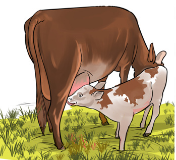

Mammals
Mammals are vertebrates with mammary glands. In female mammals, the mammary glands secrete milk used for suckling or feeding their youngs. Examples of mammals are human beings, bats, whales, rats, elephants, dogs, donkeys, lions, horses, zebra, leopards, kangaroos, cows, goats, baboons and sheep. Figure 15 shows an example of mammals.

General characteristics of mammals
All mammals have mammary glands. In female mammals the mammary glands produce milk that is used to feed their youngs.
Their bodies are covered with hair which help them to maintain the body temperature.
Mammals have skin with sweat glands.
Most mammals give birth to alive youngs.
Most mammals live on land. A few mammals, such as whales and porpoises live in water.
They are warm-blooded.
They use lungs for gaseous exchange.
They have external ears.